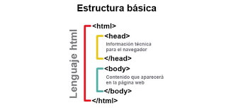

HTML
es un lenguaje de marcado que se utiliza para el desarrollo de páginas de Internet. Se trata de la sigla que corresponde a HyperText Markup Language, es decir, Lenguaje de Marcas de Hipertexto, que podría ser traducido como Lenguaje de Formato de Documentos para Hipertexto.
EL HTML se encarga de desarrollar una descripción sobre los contenidos que aparecen como textos
Es un lenguaje muy simple y general que sirve para definir otros lenguajes que tienen que ver con el formato de los documentos
Para la escritura de este lenguaje, se crean etiquetas que aparecen especificadas a través de corchetes o paréntesis angulares: < y >
gracias
Las etiquetas de encabezados se utilizan para diferenciar textos o párrafos comunes de otros importantes. Las etiquetas de las cabeceras serian: H1, H2, H3, H4, H5 y H6. Tienen un orden jerárquico, en el que H1 es el de mayor importancia.

Finalmente, sólo nos falta saber dónde escribir código en HTML y para ello sólo es necesario un editor de texto como el bloc de notas, aunque en mi opinión te recomendaría que descargaras Sublime Text debido a que facilita la escritura de código HTML. Si aún quieres saber si HTML es fácil de escribir, te diría que sí, porque no hay mayor obstáculo en el aprendizaje que tus propias ganas de aprender
MAS INFORMACION